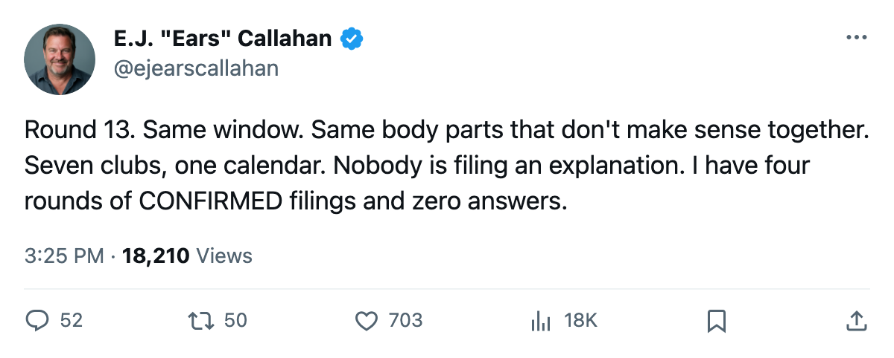
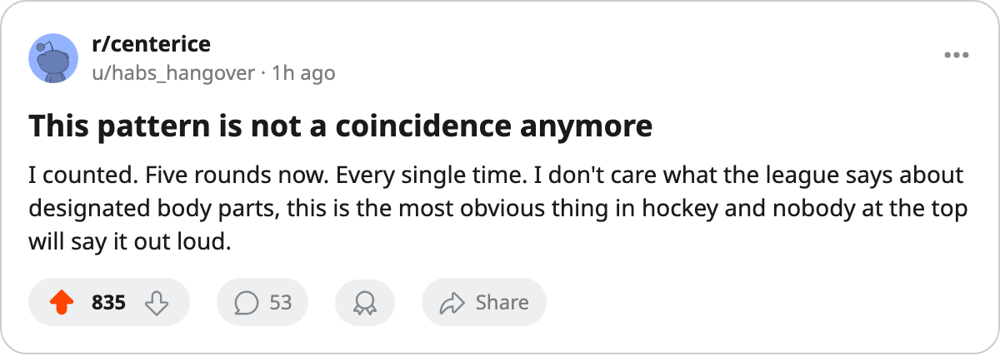

Sign-and-Injure, Round 13: 7 of 8 Hit IR in the Same Window. The Return Dates Span Dec 18 to Feb 7.
Eight contracts filed Dec 8-11 at seven clubs. All but one went down between Dec 11 and Dec 15. The pattern has now run for five consecutive rounds.
 E.J. "Ears" CallahanInsider · The Hot Stove
E.J. "Ears" CallahanInsider · The Hot Stove

The pattern holds for a 5th consecutive round with no explanation from any club
The piece
The league filed 8 contracts between Dec 8 and Dec 11. Seven of the eight men are on the injured list with an onset window of between 2005-12-11 and 2005-12-15. Every single one. Same window, same pattern, five rounds running.
The signings and their filing dates:
| signing | date | salary | body part | return |
|---|---|---|---|---|
 Jochen Hecht76 → Jochen Hecht76 →  Minnesota Wild Minnesota Wild | Dec 8 | $407,290 | neck | 2005-12-18 |
 Mike Ribeiro66 → Mike Ribeiro66 →  Montreal Canadiens Montreal Canadiens | Dec 8 | $566,890 | knee | 2005-12-27 |
Tomas Zizka72 →  Los Angeles Kings Los Angeles Kings | Dec 9 | $260,810 | wrist | 2006-01-10 |
 Erik Cole79 → Erik Cole79 →  Mighty Ducks of Anaheim Mighty Ducks of Anaheim | Dec 9 | $533,390 | groin | 2005-12-30 |
 Robert Reichel77 → Robert Reichel77 →  Phoenix Coyotes Phoenix Coyotes | Dec 9 | $108,800 | foot | 2006-02-07 |
 Dimitri Kalinin84 → Dimitri Kalinin84 →  Columbus Blue Jackets Columbus Blue Jackets | Dec 10 | $396,020 | arm | 2006-01-08 |
 Ales Kotalik78 → Ales Kotalik78 →  Buffalo Sabres Buffalo Sabres | Dec 11 | $364,440 | hand | 2006-01-30 |
Mike Danton →  Vancouver Canucks Vancouver Canucks | Dec 9 | $637,890 | still available |
Robert Reichel went from a $108,800 signing at Phoenix Coyotes on Dec 9 to a foot on the injured list that keeps him out until Feb 7. He has 60 days left on the shelf.
Jochen Hecht has the shortest: neck, back Dec 18, a 10-day disappearance from a Dec 8 signing at Minnesota Wild. Minnesota Wild will have him for all of 7 games.
The pattern hits clubs nobody has reported on
This round touches Minnesota Wild, Montreal Canadiens, Los Angeles Kings, Mighty Ducks of Anaheim, Columbus Blue Jackets and Vancouver Canucks, six clubs that have not appeared in a Hot Stove column since the desk started tracking this pattern. Phoenix Coyotes and Buffalo Sabres are old ground.
A club files a one-year deal for a veteran, and the veteran's body fails before the contract can produce value. The league designates a body part. The return date is firm. The salary counts against payroll the entire time. Five rounds, and no club has explained the coincidence.
The one man still standing
Mike Danton, signed by Vancouver Canucks on Dec 9 for $637,890, is the only name from this batch not on the injured list as of today. He has 6 days of clean health on a deal that cost the third-most in this group.
The return dates in this round run from Dec 18 to Feb 7. The onset is always the same: between Dec 11 and Dec 15.

